anúncio, arte e vídeo
peça vertical
que vende uma coisa só
Peças feitas para clientes de verdade, publicadas com autorização: sistema, plataforma, tutorial e reel. Abaixo delas, as peças de marca inventada, feitas do zero — nome, oferta, direção de arte, animação e o vídeo final, sem foto pronta nem banco de imagem.
trabalho de cliente
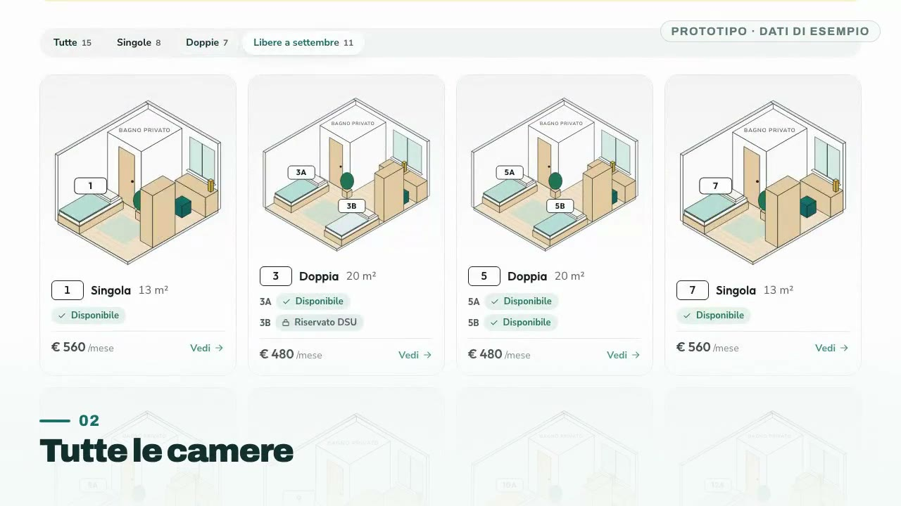
imóveis para estudantes · sistema
Viveras Life
O caminho de quem procura quarto na Itália: o apartamento em 3D, o simulador de preço e o pedido de reserva.
- 16:9
- 28 s
- captura de tela
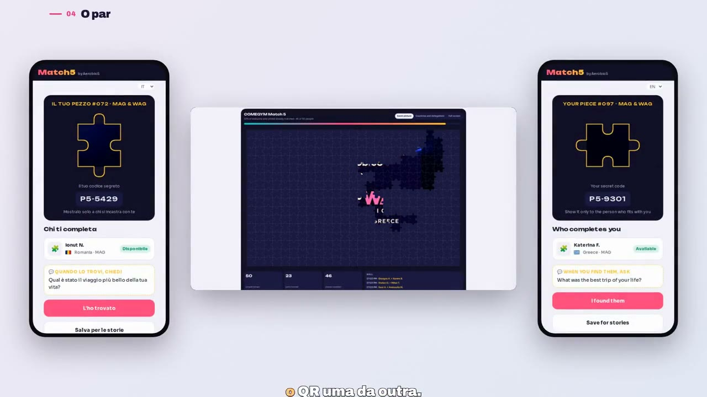
evento esportivo · plataforma
Match5
Apps para atleta e público, agenda de provas e o painel de quem organiza o campeonato de ginástica.
- 16:9
- 30 s
- apps + painel
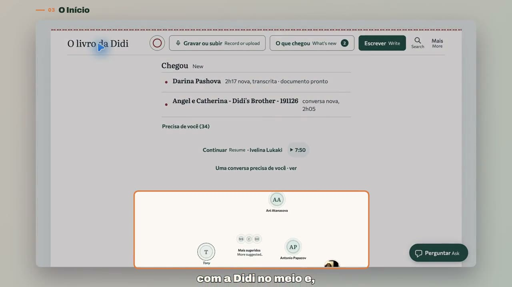
livro de família · tutorial
Acervo
Conversas, fotos e documentos da família viram capítulos de um livro, mostrado tela por tela.
- 16:9
- 30 s
- tutorial narrado
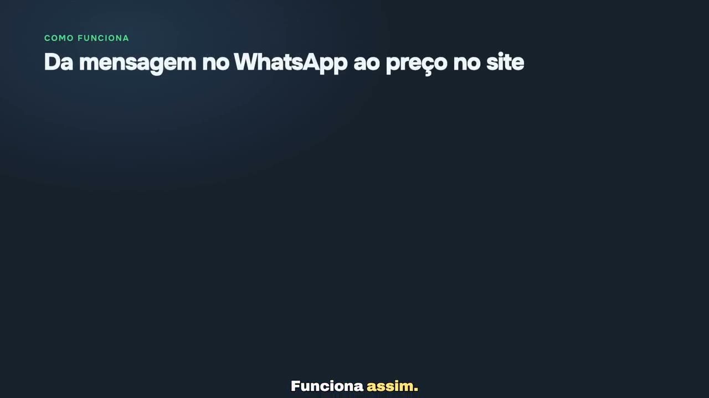
preço de fornecedor · demonstração
Seu Buscador
A lista que chega no WhatsApp vira busca no site: fornecedor identificado e o mesmo item lado a lado, com o preço de cada um.
- 16:9
- 30 s
- narração em português
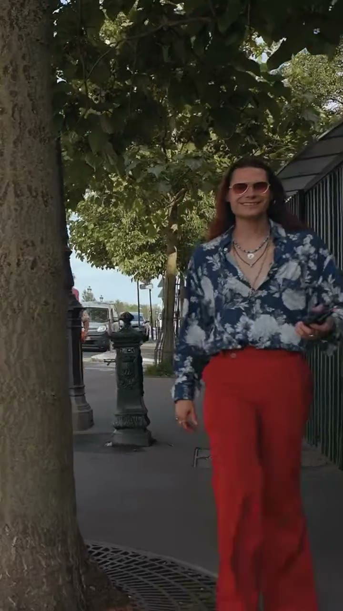
viagem · reel de edição
Sainte Chapelle
O material gravado virou um passeio por Paris com narração em inglês, corte no ritmo da fala e legendas queimadas.
- 9:16
- 45 s
- edição + legendas
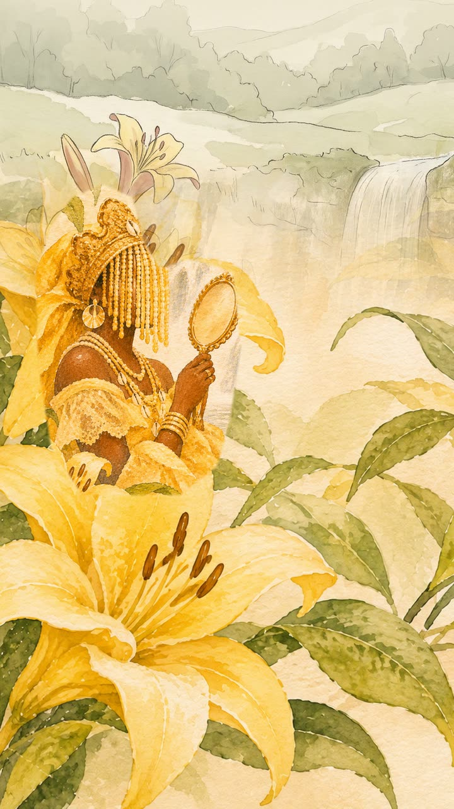
marca pessoal · aquarela animada
Colagem em movimento
A aquarela da cliente virou três planos com parallax — morros, cachoeira e lírios, cada um na sua velocidade — e a figura entra pela esquerda.
- 9:16
- 30 s
- sem imagem gerada
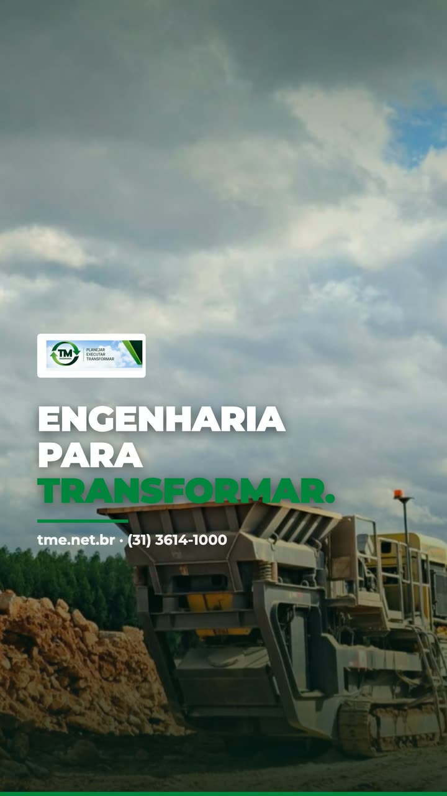
engenharia e terraplenagem · reel de marca
TM Engenharia
Seis fotos do canteiro viraram reel de 30 segundos, com movimento de drone, corte na batida, legenda do guia da marca e narração.
- 9:16
- 30 s
- foto + narração
marca inventada, feita do zero
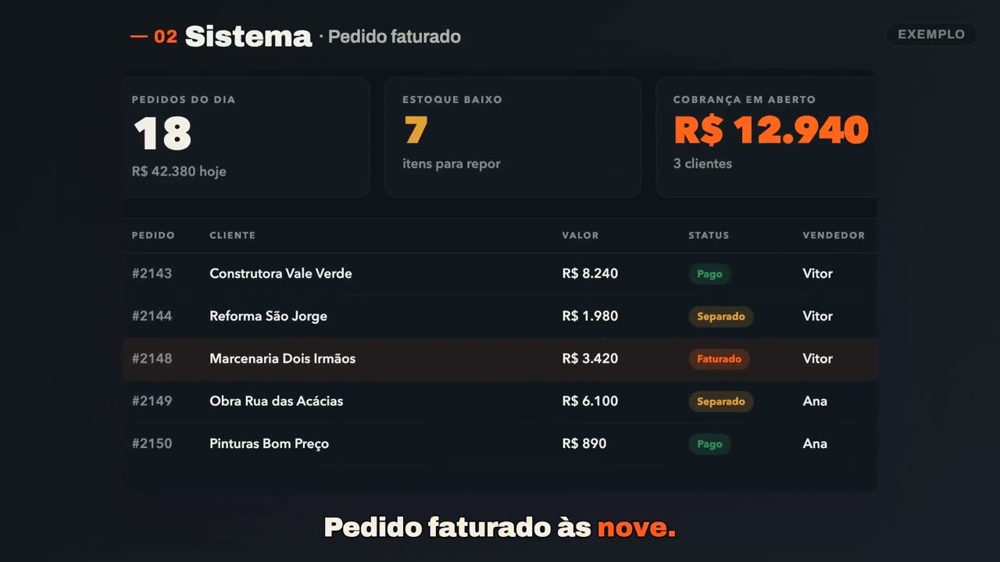
atacado de construção · filme de produto · feito com IA
Casa Norte
Marca inventada, três produtos na tela: o painel com o pedido faturado, o WhatsApp respondendo com o estoque real e a loja vendendo do mesmo estoque.
- 16:9
- 40 s
- telas gravadas + narração
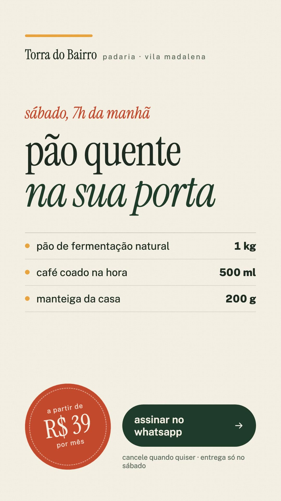
padaria · story
Torra do Bairro
Assinatura de pão e café. O horário da entrega virou o argumento e o preço entrou como selo carimbado.
- 9:16
- 6 s
- arte + animação
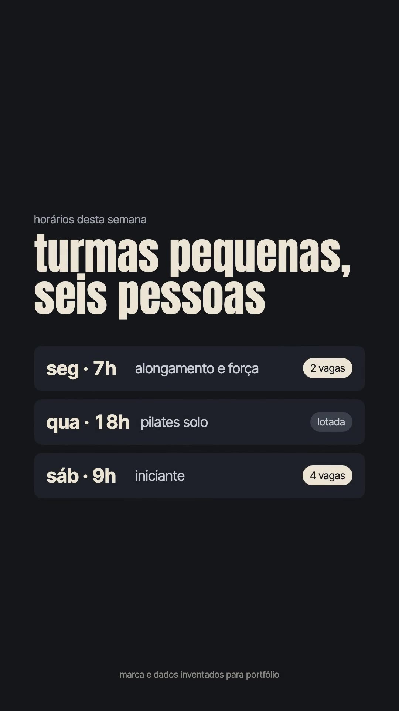
estúdio de pilates · reel
Estúdio Alonga
Captação para aula experimental em três cenas: a dor, a grade real de horários e o convite no WhatsApp.
- 9:16
- 9 s
- roteiro + edição
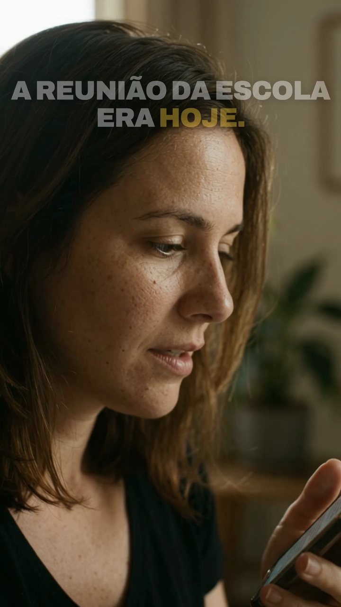
aplicativo · anúncio · feito com IA
Lembrina
Anúncio de app da agenda da casa, para uma marca inventada: a reunião da escola que passou, o aviso na tela de bloqueio e a semana organizada.
- 9:16
- 30 s
- narração + atriz por IA
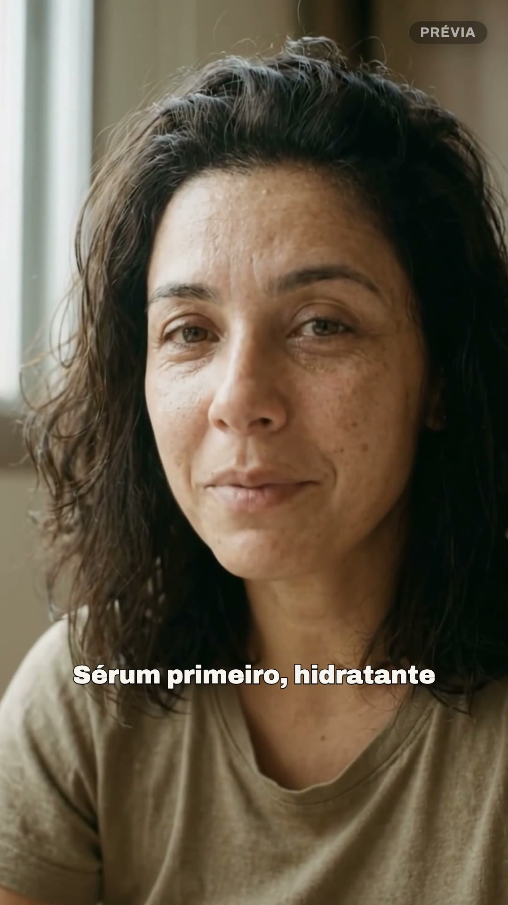
skincare · ugc · feito com IA
Lumê Skin
Depoimento de 15 segundos para uma marca inventada de skincare: a pele opaca de manhã, a ordem certa dos produtos e o viço no fim.
- 9:16
- 15 s
- apresentadora por IA
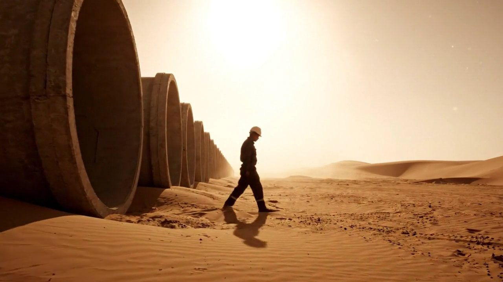
documentário · espanhol · feito com IA
O rio sob o Saara
Mini documentário narrado em espanhol sobre o rio artificial da Líbia: da duna vazia à água chegando à cidade.
- 16:9
- 26 s
- narração + cenas por IA
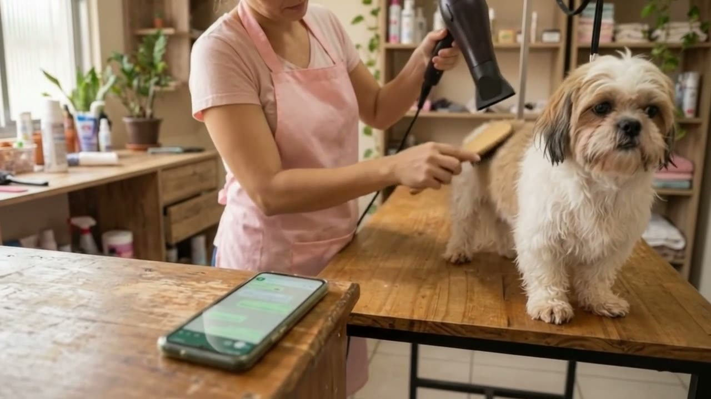
tutorial de tela · pet shop de exemplo
Pelo Solto em 30 segundos
O atendimento com IA no WhatsApp mostrado na própria tela, com zoom no ponto da ação, cursor e narração, e o convite no fim.
- 16:9
- 30 s
- tela gravada + narração
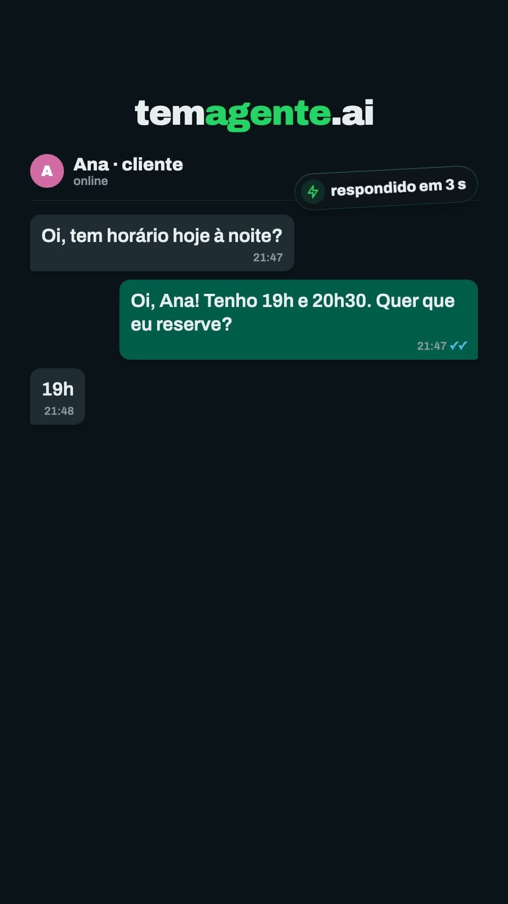
saas · anúncio em motion · feito com IA
Tem Agente
A mesma mensagem duas vezes: sem resposta e o cliente vai embora; com o agente de IA, resposta em 3 segundos e horário marcado.
- 9:16
- 21 s
- motion de interface
Horários, preços e pessoas são de exemplo, e as pessoas dos vídeos feitos com IA foram geradas. Nada aqui é venda ou resultado real: são peças para mostrar o trabalho.